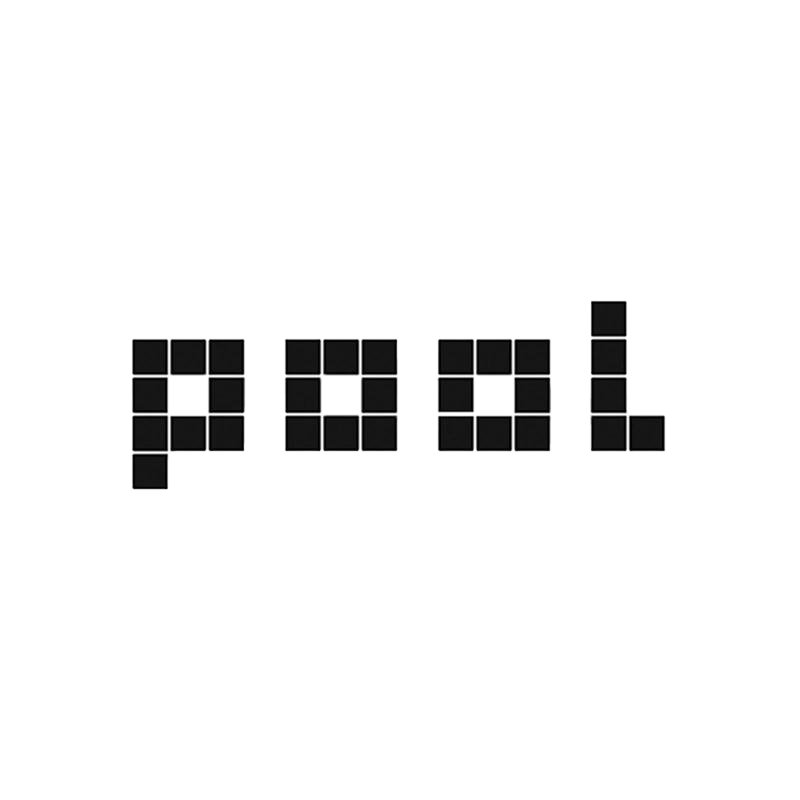
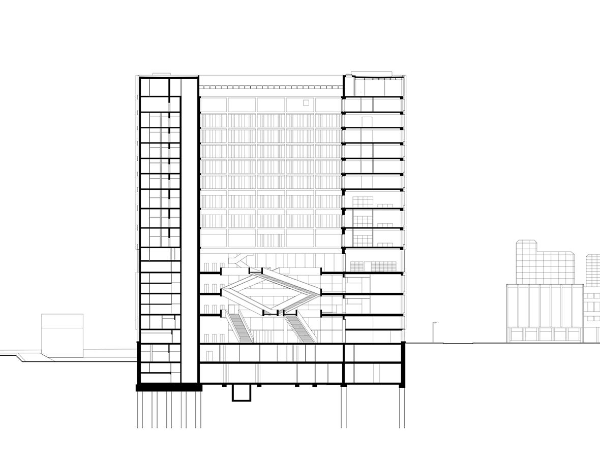
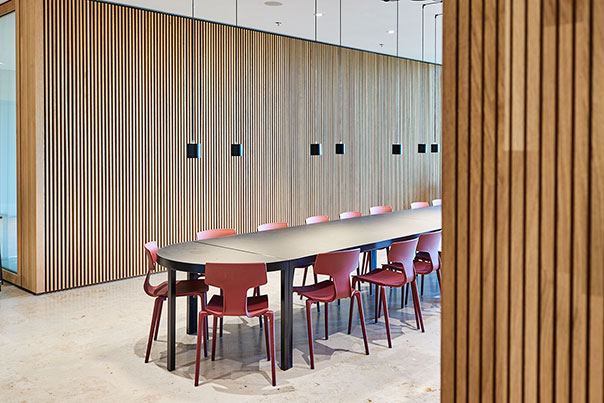
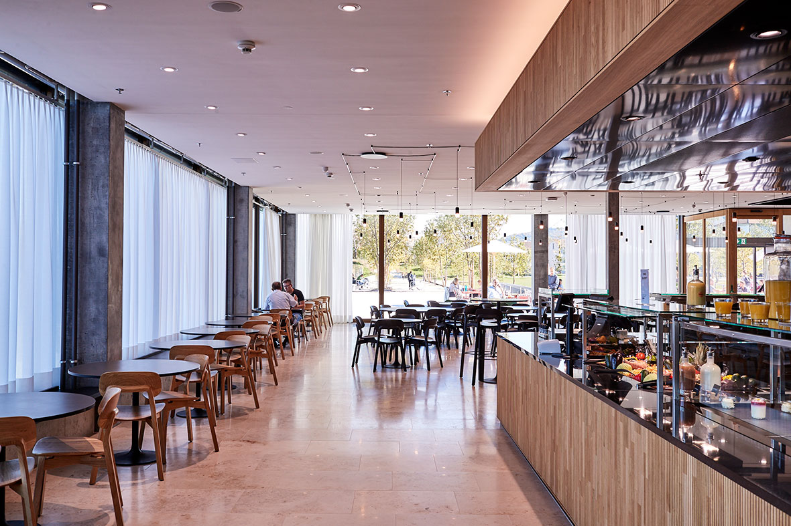

FHNW
CAMPUS
MUTTENZ
Neubau für Lehre, Forschung, Labor, Verwaltung, Gastro und Sport
Ein kompakter Hochschulbau mit starker Wechselwirkung zwischen Architektur und Freiraum
Der Neubau bündelt Lehre, Forschung, Labor, Verwaltung, Gastronomie und Sport in einer flexiblen Struktur mit wirtschaftlichem Betrieb.



Volumen, Fläche, Kosten
Gebäudevolumen 355'000 m³, Geschossfläche 68'000 m², Hauptnutzfläche 35'000 m². Baukosten BKP 1–9: 300 Mio. CHF.

Monumentale Ruhe und präzise Orientierung
Die innere Ordnung verbindet Großzügigkeit, klare Erschliessung und eine robuste Atmosphäre für den täglichen Hochschulbetrieb.
Flexible Organisation für Lehre, Forschung und Verwaltung
Die Stärke des Hauses liegt in seiner klaren, anpassungsfähigen Struktur und in der präzisen Verzahnung von Nutzungen, Wegen und offenen Bereichen.

Mit Schnitten kannst du die räumliche Logik stark machen
Ja — damit kann man sehr gut arbeiten. Schnitte, Fassaden oder Grundrisse eignen sich perfekt für diese Seitenräume, weil sie das Projekt nicht nur atmosphärisch, sondern auch konstruktiv und organisatorisch zeigen.


Räumliche Tiefe statt bloßer Oberfläche
Diese Zusatzebene funktioniert gut mit Bildern, die Atrium, Staffelung, mehrgeschossige Bezüge oder transparente Raumfolgen zeigen.

Offene Bereiche für Aufenthalt, Austausch und Alltag
Der Campus organisiert gemeinschaftliche Flächen mit Charakter, ohne die Klarheit der Gesamtfigur aufzugeben.
Eine Struktur, die Wandel zulässt
Die räumliche Organisation erlaubt unterschiedliche Lehr-, Arbeits- und Forschungssituationen und bleibt dabei robust, übersichtlich und wirtschaftlich.

Fokus und Kollaboration in einem System
Hier passen Bilder, die Möblierung, Arbeitszonen, Lernlandschaften oder unterschiedliche Grade von Offenheit zeigen.


Flächen, die Konzentration und Bewegung zusammenbringen
Arbeitslandschaften mit ruhiger Präsenz, guter Lichtführung und klarer Lesbarkeit im Alltag der Hochschule.

Licht als ordnendes architektonisches Mittel
Diese Ebene eignet sich für Stimmungen mit Oberlicht, Seitenlicht, Schattenkanten oder stark lesbaren Raumabschlüssen.
pool Architekten als Architekt und Gesamtleitung
Generalplanung: pool Architekten Zürich / Takt Baumanagement AG Zürich. Landschaft: Studio Vulkan. Tragwerk: Schnetzer Puskas. HLKS: Kalt + Halbeisen.